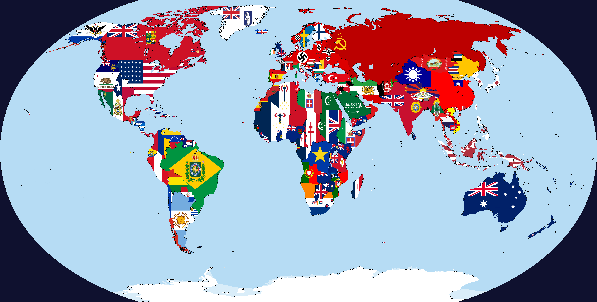
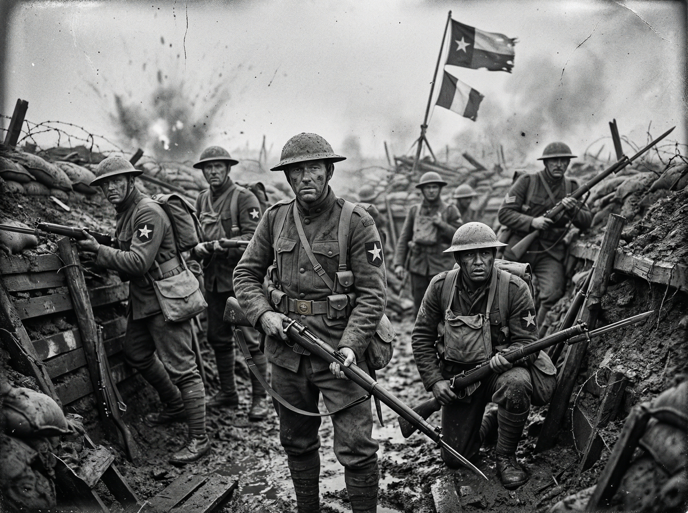
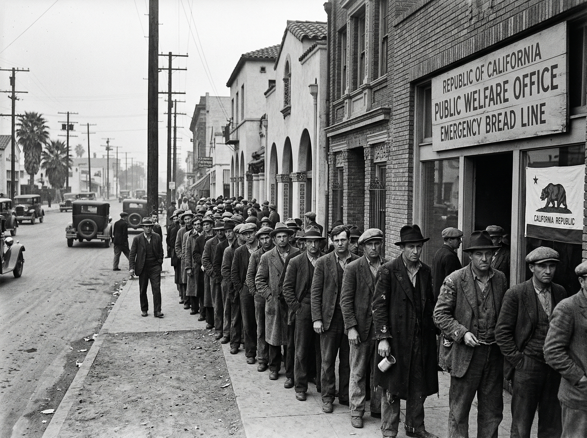
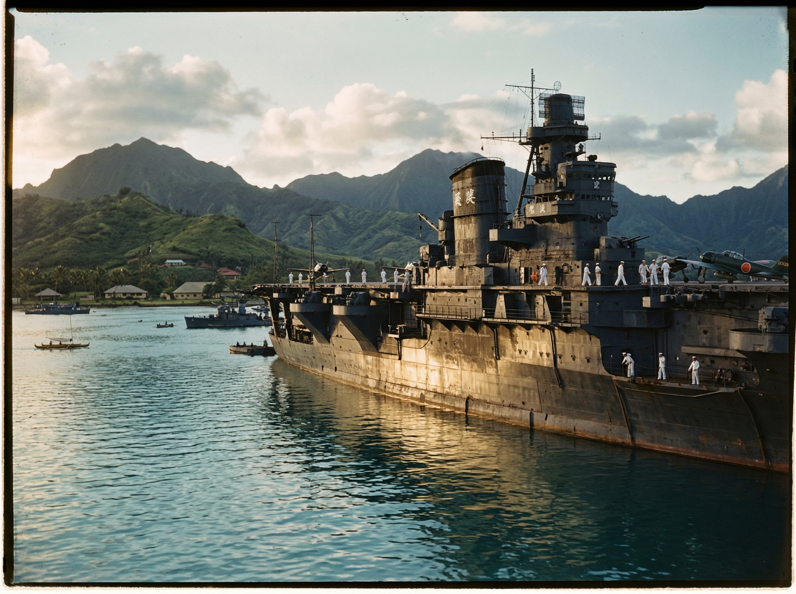
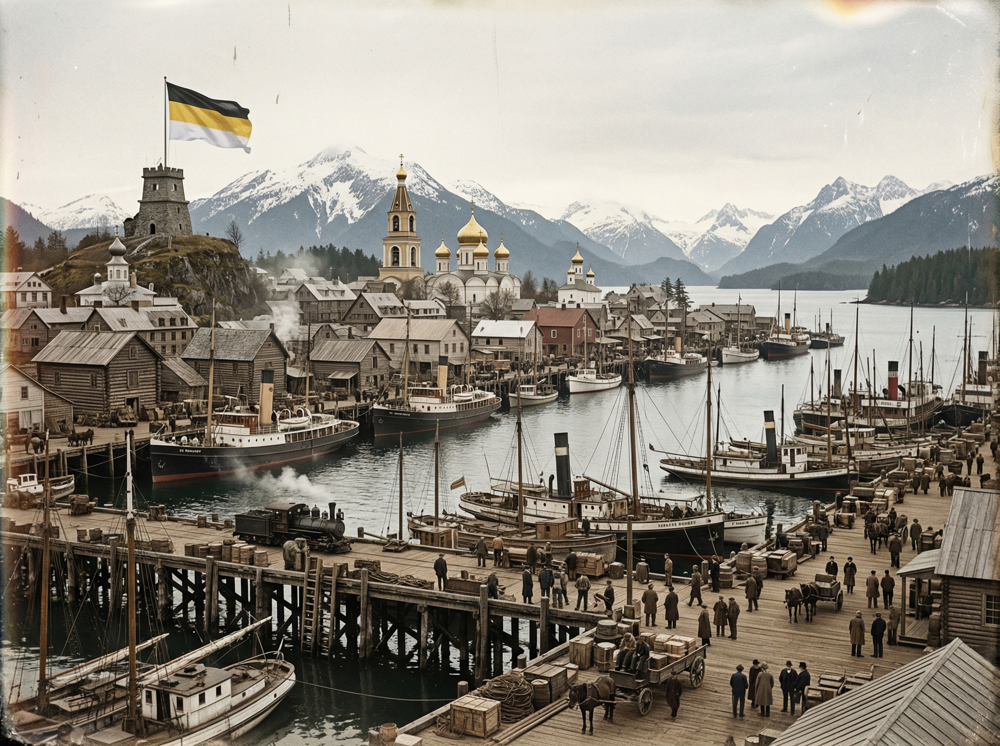

El Escenario de la Gran Guerra y la Preguerra

El ascenso de la esfera japonesa y la independencia de Alaska marcan el inicio del fin del orden eurocéntrico tradicional.
La Gran Guerra (1914-1918)
EE. UU., Texas y California mantuvieron la neutralidad hasta 1917. Al unirse a los Aliados tras el hundimiento de mercantes por submarinos alemanes, Texas y California se consolidaron como potencias petroleras y auríferas estratégicas para Londres y París.
El Imperio de Alaska
Tras la Revolución Rusa, el Ejército Blanco se refugia en Alaska. Con el apoyo del Reino Unido, se establece una monarquía constitucional bajo la dinastía Románov en el exilio, convirtiéndose en el bastión monárquico del Nuevo Mundo.
El Silencio de Pearl Harbor
Sin posesiones en el Pacífico, Estados Unidos no tiene flota estacionada en Hawái. Japón expande su control sobre China y el sudeste asiático sin la interferencia directa de Washington durante los años 30.
La Gran Depresión
El colapso de 1929 golpea duramente a Texas y California. Al depender financieramente del Reino Unido y EE. UU., las repúblicas occidentales sufren altas tasas de pobreza, alimentando movimientos nacionalistas.
Archivo Visual: 1914 - 1942



